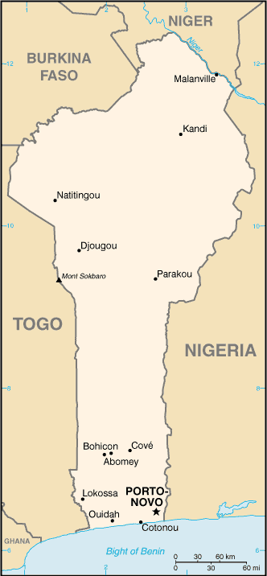

Africa :: BENIN
Introduction :: BENIN
-
Present day Benin was the site of Dahomey, a West African kingdom that rose to prominence in about 1600 and over the next two and a half centuries became a regional power, largely based on its slave trade. Coastal areas of Dahomey began to be controlled by the French in the second half of the 19th century; the entire kingdom was conquered by 1894. French Dahomey achieved independence in 1960; it changed its name to the Republic of Benin in 1975.A succession of military governments ended in 1972 with the rise to power of Mathieu KEREKOU and the establishment of a government based on Marxist-Leninist principles. A move to representative government began in 1989. Two years later, free elections ushered in former Prime Minister Nicephore SOGLO as president, marking the first successful transfer of power in Africa from a dictatorship to a democracy. KEREKOU was returned to power by elections held in 1996 and 2001, though some irregularities were alleged. KEREKOU stepped down at the end of his second term in 2006 and was succeeded by Thomas YAYI Boni, a political outsider and independent, who won a second five-year term in March 2011. Patrice TALON, a wealthy businessman, took office in 2016 after campaigning to restore public confidence in the government.
Geography :: BENIN
-
Western Africa, bordering the Bight of Benin, between Nigeria and Togo9 30 N, 2 15 EAfricatotal: 112,622 sq kmland: 110,622 sq kmwater: 2,000 sq kmcountry comparison to the world: 103slightly smaller than Pennsylvaniatotal: 2,123 kmborder countries (4): Burkina Faso 386 km, Niger 277 km, Nigeria 809 km, Togo 651 km121 kmterritorial sea: 200 nmexclusive fishing zone: 200 nmcontinental shelf: 200 nmtropical; hot, humid in south; semiarid in northmostly flat to undulating plain; some hills and low mountainsmean elevation: 273 melevation extremes: lowest point: Atlantic Ocean 0 mhighest point: Mont Sokbaro 658 msmall offshore oil deposits, limestone, marble, timberagricultural land: 31.3%arable land 22.9%; permanent crops 3.5%; permanent pasture 4.9%forest: 40%other: 28.7% (2011 est.)230 sq km (2012)the population is primarily located in the south, with the highest concentration of people residing in and around the cities on the Atlantic coast; most of the north remains sparsely populated with higher concentrations of residents in the westhot, dry, dusty harmattan wind may affect north from December to Marchinadequate supplies of potable water; poaching threatens wildlife populations; deforestation; desertificationparty to: Biodiversity, Climate Change, Climate Change-Kyoto Protocol, Desertification, Endangered Species, Environmental Modification, Hazardous Wastes, Law of the Sea, Ozone Layer Protection, Ship Pollution, Wetlands, Whalingsigned, but not ratified: none of the selected agreementssandbanks create difficult access to a coast with no natural harbors, river mouths, or islands
People and Society :: BENIN
-
11,038,805note: estimates for this country explicitly take into account the effects of excess mortality due to AIDS; this can result in lower life expectancy, higher infant mortality, higher death rates, lower population growth rates, and changes in the distribution of population by age and sex than would otherwise be expected (July 2017 est.)country comparison to the world: 82noun: Beninese (singular and plural)adjective: BenineseFon and related 38.4%, Adja and related 15.1%, Yoruba and related 12%, Bariba and related 9.6%, Fulani and related 8.6%, Ottamari and related 6.1%, Yoa-Lokpa and related 4.3%, Dendi and related 2.9%, other 0.9%, foreigner 1.9% (2013 est.)French (official), Fon and Yoruba (most common vernaculars in south), tribal languages (at least six major ones in north)Muslim 27.7%, Roman Catholic 25.5%, Protestant 13.5% (Celestial 6.7%, Methodist 3.4%, other Protestant 3.4%), Vodoun 11.6%, other Christian 9.5%, other traditional religions 2.6%, other 2.6%, none 5.8% (2013 est.)Benin has a youthful age structure – almost 65% of the population is under the age of 25 – which is bolstered by high fertility and population growth rates. Benin’s total fertility has been falling over time but remains high, declining from almost 7 children per women in 1990 to 4.8 in 2016. Benin’s low contraceptive use and high unmet need for contraception contribute to the sustained high fertility rate. Although the majority of Beninese women use skilled health care personnel for antenatal care and delivery, the high rate of maternal mortality indicates the need for more access to high quality obstetric care.Poverty, unemployment, increased living costs, and dwindling resources increasingly drive the Beninese to migrate. An estimated 4.4 million, more than 40%, of Beninese live abroad. Virtually all Beninese emigrants move to West African countries, particularly Nigeria and Cote d’Ivoire. Of the less than 1% of Beninese emigrants who settle in Europe, the vast majority live in France, Benin’s former colonial ruler.With about 40% of the population living below the poverty line, many desperate parents resort to sending their children to work in wealthy households as domestic servants (a common practice known as vidomegon), mines, quarries, or agriculture domestically or in Nigeria and other neighboring countries, often under brutal conditions. Unlike in other West African countries, where rural people move to the coast, farmers from Benin’s densely populated southern and northwestern regions move to the historically sparsely populated central region to pursue agriculture. Immigrants from West African countries came to Benin in increasing numbers between 1992 and 2002 because of its political stability and porous borders.0-14 years: 42.65% (male 2,402,029/female 2,305,622)15-24 years: 20.44% (male 1,148,204/female 1,108,342)25-54 years: 30.44% (male 1,699,623/female 1,660,517)55-64 years: 3.61% (male 174,633/female 223,398)65 years and over: 2.87% (male 124,708/female 191,729) (2017 est.)total dependency ratio: 86.1youth dependency ratio: 80.1elderly dependency ratio: 6potential support ratio: 16.6 (2015 est.)total: 18.2 yearsmale: 17.9 yearsfemale: 18.6 years (2017 est.)country comparison to the world: 2152.71% (2017 est.)country comparison to the world: 1335 births/1,000 population (2017 est.)country comparison to the world: 217.9 deaths/1,000 population (2017 est.)country comparison to the world: 920 migrant(s)/1,000 population (2017 est.)country comparison to the world: 75the population is primarily located in the south, with the highest concentration of people residing in and around the cities on the Atlantic coast; most of the north remains sparsely populated with higher concentrations of residents in the westurban population: 44.8% of total population (2017)rate of urbanization: 3.55% annual rate of change (2015-20 est.)PORTO-NOVO (capital) 268,000 (2014); COTONOU (seat of government) 682,000; Abomey-Calavi 757,000 (2015)at birth: 1.05 male(s)/female0-14 years: 1.04 male(s)/female15-24 years: 1.04 male(s)/female25-54 years: 1.02 male(s)/female55-64 years: 0.76 male(s)/female65 years and over: 0.66 male(s)/femaletotal population: 1.01 male(s)/female (2016 est.)20.3 yearsnote: median age at first birth among women 25-29 (2011/12 est.)405 deaths/100,000 live births (2015 est.)country comparison to the world: 26total: 52.8 deaths/1,000 live birthsmale: 55.9 deaths/1,000 live birthsfemale: 49.6 deaths/1,000 live births (2017 est.)country comparison to the world: 23total population: 62.3 yearsmale: 60.9 yearsfemale: 63.8 years (2017 est.)country comparison to the world: 1984.77 children born/woman (2017 est.)country comparison to the world: 1717.9% (2014)4.6% of GDP (2014)country comparison to the world: 1540.15 physicians/1,000 population (2013)0.5 beds/1,000 population (2010)improved:urban: 85.2% of populationrural: 72.1% of populationtotal: 77.9% of populationunimproved:urban: 14.8% of populationrural: 27.9% of populationtotal: 22.1% of population (2015 est.)improved:urban: 35.6% of populationrural: 7.3% of populationtotal: 19.7% of populationunimproved:urban: 64.4% of populationrural: 92.7% of populationtotal: 80.3% of population (2015 est.)1% (2016 est.)country comparison to the world: 4367,000 (2016 est.)country comparison to the world: 502,400 (2016 est.)country comparison to the world: 49degree of risk: very highfood or waterborne diseases: bacterial and protozoal diarrhea, hepatitis A, and typhoid fevervectorborne diseases: dengue fever, malaria, and yellow feverrespiratory disease: meningococcal meningitisanimal contact disease: rabies (2016)9.6% (2016)country comparison to the world: 14218% (2014)country comparison to the world: 304.3% of GDP (2014)country comparison to the world: 64definition: age 15 and over can read and writetotal population: 38.4%male: 49.9%female: 27.3% (2015 est.)total: 12 yearsmale: 14 yearsfemale: 11 years (2013)total: 2.4%male: 1.5%female: 3.1% (2010 est.)
Government :: BENIN
-
conventional long form: Republic of Beninconventional short form: Beninlocal long form: Republique du Beninlocal short form: Beninformer: Dahomeyetymology: named for the Bight of Benin, the body of water on which the country liespresidential republicname: Porto-Novo (official capital); Cotonou (seat of government)geographic coordinates: 6 29 N, 2 37 Etime difference: UTC+1 (6 hours ahead of Washington, DC, during Standard Time)12 departments; Alibori, Atacora, Atlantique, Borgou, Collines, Couffo, Donga, Littoral, Mono, Oueme, Plateau, Zou1 August 1960 (from France)Independence Day, 1 August (1960)history: previous 1946, 1958 (preindependence); latest adopted by referendum 2 December 1990, promulgated 11 December 1990amendments: proposed concurrently by the president of the republic (after a decision in the Council of Ministers) and the National Assembly; consideration of drafts or proposals requires at least three-fourths majority vote of the Assembly membership; passage requires approval in a referendum unless approved by at least four-fifths majority vote of the Assembly membership; constitutional articles affecting territorial sovereignty, the republican form of government, and secularity of Benin cannot be amended (2017)civil law system modeled largely on the French system and some customary lawhas not submitted an ICJ jurisdiction declaration; accepts ICCt jurisdictioncitizenship by birth: nocitizenship by descent only: at least one parent must be a citizen of Benindual citizenship recognized: yesresidency requirement for naturalization: 10 years18 years of age; universalchief of state: President Patrice TALON (since 6 April 2016); note - the president is both chief of state and head of governmenthead of government: President Patrice TALON (since 6 April 2016); prime minister position abolishedcabinet: Council of Ministers appointed by the presidentelections/appointments: president directly elected by absolute majority popular vote in 2 rounds if needed for a 5-year term (eligible for a second term); last held on 6 March and 20 March 2016 (next to be held in 2021)election results: Patrice TALON elected president; percent of vote (first round) - Lionel ZINSOU (FCBE) 28.4%, Patrice TALON (independent) 24.8%, Sebastien AJAVON (independent) 23.0%, Abdoulaye Bio TCHANE (ABT) 8.8%, Pascal KOUPAKI (NC) 5.9%, other 9.1%; percent of vote (second round)- Patrice TALON 65.4%, Lionel ZINSOU 34.6%description: unicameral National Assembly or Assemblee Nationale (83 seats; members directly elected in multi-seat constituencies by proportional representation vote; members serve 4-year terms)elections: last held on 26 April 2015 (next to be held in April 2019)election results: percent of vote by party - FCBE 30.2%, UN 14.4%, PRD 10.6%, AND 7.6%, RB-RP 7.1%, other 30.1%; seats by party - FCBE 33, UN 13, PRD 10, AND 5, RB-RP 7, other 15highest court(s): Supreme Court or Cour Supreme (consists of the court president and 3 chamber presidents organized into an administrative division, judicial chamber, and chamber of accounts); Constitutional Court or Cour Constitutionnelle (consists of 7 members including the court president); High Court of Justice (consists of the Constitutional Court members, 6 members appointed by the National Assembly, and the Supreme Court president); note - jurisdiction of the High Court of Justice is limited to cases of high treason by the national president or members of the government while in officejudge selection and term of office: Supreme Court president and judges appointed by the national president upon the advice of the National Assembly; judges appointed for single renewable 5-year terms; Constitutional Court members - 4 appointed by the National Assembly and 3 by the national president; members appointed for single renewable 5-year terms; High Court of Justice "other" members elected by the National Assembly; member tenure NAsubordinate courts: Court of Appeal or Cour d'Appel; district courts; village courts; Assize courtsAlliance for a Triumphant Benin or ABT [Abdoulaye BIO TCHANE]African Movement for Development and Progress or MADEP [Sefou FAGBOHOUN]Benin Renaissance or RB [Lehady SOGLO]Cowrie Force for an Emerging Benin or FCBE [Yayi BONI]Democratic Renewal Party or PRD [Adrien HOUNGBEDJI]New Consciousness Rally or NC [Pascal KOUPAKI]Patriotic Awakening or RP [Janvier YAHOUEDEOU]Social Democrat Party or PSD [Emmanuel GOLOU]Sun Alliance or AS [Sacca LAFIA]Union Makes the Nation or UN [Adrien HOUNGBEDJI] (includes PRD, MADEP)United Democratic Forces or FDU [Mathurin NAGO]note: approximately 20 additional minor partieseconomic groups; environmentalists; political groups; teachers' unions and other educational groupsACP, AfDB, AU, CD, ECOWAS, Entente, FAO, FZ, G-77, IAEA, IBRD, ICAO, ICCt, ICRM, IDA, IDB, IFAD, IFC, IFRCS, ILO, IMF, IMO, Interpol, IOC, IOM, IPU, ISO, ITSO, ITU, ITUC (NGOs), MIGA, MINUSMA, MONUSCO, NAM, OAS (observer), OIC, OIF, OPCW, PCA, UN, UNAMID, UNCTAD, UNESCO, UNHCR, UNIDO, UNMIL, UNMISS, UNOCI, UNWTO, UPU, WADB (regional), WAEMU, WCO, WFTU (NGOs), WHO, WIPO, WMO, WTOchief of mission: Ambassador Hector POSSET (since 18 January 2017)chancery: 2124 Kalorama Road NW, Washington, DC 20008telephone: [1] (202) 232-6656FAX: [1] (202) 265-1996chief of mission: Ambassador Lucy TAMLYN (since 8 November 2015)embassy: Caporal Bernard Anani, 01 BP 2012, Cotonoumailing address: 01 B. P. 2012, Cotonoutelephone: [229] 21-30-06-50FAX: [229] 21-30-03-84two equal horizontal bands of yellow (top) and red (bottom) with a vertical green band on the hoist side; green symbolizes hope and revival, yellow wealth, and red couragenote: uses the popular Pan-African colors of Ethiopialeopard; national colors: green, yellow, redname: "L'Aube Nouvelle" (The Dawn of a New Day)lyrics/music: Gilbert Jean DAGNONnote: adopted 1960
Economy :: BENIN
-
The free market economy of Benin has grown consecutively for three years, averaging about 5% annually since 2014, but its close trade links to Nigeria expose Benin to risks from volatile commodity prices. Cotton is a key export commodity; high prices supported export earnings, but prices have fallen. Inflation has subsided and remains just 1% over the past several years.During the first 6 months of President TALON’s administration, electrical supply, which has hampered Benin’s economic growth, increased and blackouts have been reduced. Private foreign direct investment is small, and foreign aid accounts for the majority of investment in infrastructure projects.Benin’s 2001 privatization policy continues in telecommunications, water, electricity, and agriculture. Benin has appealed for international assistance to mitigate piracy against commercial shipping in its territory. Pilferage has significantly dropped as the Port of Cotonou is still making progress towards implementing the International Ship and Port Facility Security (ISPS) Code in an effort to remain competitive. Projects included in Benin's $307 million Millennium Challenge Corporation (MCC) compact (2006-11) were designed to increase investment and private sector activity by improving key institutional and physical infrastructure. The four projects focused on access to land, access to financial services, access to justice, and access to markets (including modernization of the port). The Port of Cotonou is the largest component of Benin’s economy with revenues projected to account for more than 40% of Benin’s national budget.Realizing its economic potential requires further efforts to infrastructure upgrades, stemming corruption, and expanding access to foreign markets in Nigeria and neighboring landlocked countries. In September 2015, Benin signed a MCC second Compact for $375 million that is designed to strengthen the national utility service provider, attract private sector investment, fund infrastructure investments in electricity generation and distribution, and develop off-grid electrification for poor and unserved households. In order to raise growth, Benin plans to attract more foreign investment, place more emphasis on tourism, facilitate the development of new food processing systems and agricultural products, encourage new information and communication technology, and establish Independent Power Producers (IPP).$23.58 billion (2016 est.)$22.38 billion (2015 est.)$21.69 billion (2014 est.)note: data are in 2016 dollarscountry comparison to the world: 140$8.577 billion (2016 est.)4% (2016 est.)2.1% (2015 est.)6.4% (2014 est.)country comparison to the world: 68$2,100 (2016 est.)$2,100 (2015 est.)$2,100 (2014 est.)note: data are in 2016 dollarscountry comparison to the world: 20217.4% of GDP (2016 est.)17.6% of GDP (2015 est.)20% of GDP (2014 est.)country comparison to the world: 119household consumption: 69.4%government consumption: 14.4%investment in fixed capital: 26.7%investment in inventories: 0.1%exports of goods and services: 25.7%imports of goods and services: -36.3% (2016 est.)agriculture: 25.2%industry: 23.2%services: 51.5% (2016 est.)cotton, corn, cassava (manioc, tapioca), yams, beans, palm oil, peanuts, cashews; livestocktextiles, food processing, construction materials, cement4.4% (2016 est.)country comparison to the world: 563.662 million (2007 est.)country comparison to the world: 991% (2014 est.)country comparison to the world: 536.2% (2011 est.)lowest 10%: 3.1%highest 10%: 29% (2003)36.5 (2003)country comparison to the world: 86revenues: $1.321 billionexpenditures: $1.832 billion (2016 est.)15.4% of GDP (2016 est.)country comparison to the world: 184-6% of GDP (2016 est.)country comparison to the world: 16950.4% of GDP (2016 est.)42.4% of GDP (2015 est.)country comparison to the world: 96calendar year-0.8% (2016 est.)0.3% (2015 est.)country comparison to the world: 164.25% (31 December 2010)4.25% (31 December 2009)country comparison to the world: 905.3% (31 December 2015 )country comparison to the world: 136$2.182 billion (31 December 2016 est.)$2.172 billion (31 December 2015 est.)country comparison to the world: 128$3.609 billion (31 December 2016 est.)$3.606 billion (31 December 2015 est.)country comparison to the world: 138$1.661 billion (31 December 2016 est.)$1.631 billion (31 December 2015 est.)country comparison to the world: 155$NA$-615 million (2016 est.)$-744.7 million (2015 est.)country comparison to the world: 118$1.588 billion (2016 est.)$1.683 billion (2015 est.)country comparison to the world: 144cotton, cashews, shea butter, textiles, palm products, seafoodIndia 14.3%, Malaysia 12.2%, Bangladesh 9.5%, Belarus 7.4%, China 6.2%, Nigeria 6.1%, Niger 5.6% (2016)$2.209 billion (2016 est.)$2.187 billion (2015 est.)country comparison to the world: 155foodstuffs, capital goods, petroleum productsIndia 14.9%, Thailand 12.4%, France 10.1%, China 8.4%, Togo 7.3%, Netherlands 4.8%, Belgium 4.7% (2016)$57.5 million (31 December 2016 est.)$66.8 million (31 December 2015 est.)country comparison to the world: 169$2.476 billion (31 December 2016 est.)$2.179 billion (31 December 2015 est.)country comparison to the world: 146Communaute Financiere Africaine francs (XOF) per US dollar -593.01 (2016 est.)593.01 (2015 est.)591.45 (2014 est.)494.42 (2013 est.)510.53 (2012 est.)
Energy :: BENIN
-
population without electricity: 7,300,000electrification - total population: 29%electrification - urban areas: 57%electrification - rural areas: 9% (2013)311.6 million kWh (2015 est.)country comparison to the world: 1801.121 billion kWh (2015 est.)country comparison to the world: 1530 kWh (2016 est.)country comparison to the world: 1111.078 billion kWh (2015 est.)country comparison to the world: 66213,000 kW (2015 est.)country comparison to the world: 16397.2% of total installed capacity (2015 est.)country comparison to the world: 420% of total installed capacity (2015 est.)country comparison to the world: 550.5% of total installed capacity (2015 est.)country comparison to the world: 1492.3% of total installed capacity (2015 est.)country comparison to the world: 1150 bbl/day (2016 est.)country comparison to the world: 1130 bbl/day (2014 est.)country comparison to the world: 980 bbl/day (2014 est.)country comparison to the world: 1028 million bbl (1 January 2017 es)country comparison to the world: 950 bbl/day (2014 est.)country comparison to the world: 12144,000 bbl/day (2015 est.)country comparison to the world: 1105,152 bbl/day (2014 est.)country comparison to the world: 9447,940 bbl/day (2014 est.)country comparison to the world: 830 cu m (2013 est.)country comparison to the world: 1120 cu m (2013 est.)country comparison to the world: 1600 cu m (2013 est.)country comparison to the world: 720 cu m (2013 est.)country comparison to the world: 961.133 billion cu m (1 January 2017 es)country comparison to the world: 1035 million Mt (2013 est.)country comparison to the world: 126
Communications :: BENIN
-
total subscriptions: 124,883subscriptions per 100 inhabitants: 1 (July 2016 est.)country comparison to the world: 127total: 8,892,490subscriptions per 100 inhabitants: 83 (July 2016 est.)country comparison to the world: 82general assessment: inadequate system of open-wire, microwave radio relay, and cellular connections; fixed-line network characterized by aging, deteriorating equipmentdomestic: fixed-line teledensity only about 1 per 100 persons; spurred by the presence of multiple mobile-cellular providers, cellular telephone subscribership has increased rapidly, exceeding 80 per 100 persons in 2016international: country code - 229; landing point for the SAT-3/WASC fiber-optic submarine cable that provides connectivity to Europe and Asia; long distance fiber-optic links with Togo, Burkina Faso, Niger, and Nigeria; satellite earth stations - 7 (Intelsat-Atlantic Ocean) (2016)state-run Office de Radiodiffusion et de Television du Benin (ORTB) operates a TV station providing a wide broadcast reach; several privately owned TV stations broadcast from Cotonou; satellite TV subscription service is available; state-owned radio, under ORTB control, includes a national station supplemented by a number of regional stations; substantial number of privately owned radio broadcast stations; transmissions of a few international broadcasters are available on FM in Cotonou (2016).bjtotal: 1,288,336percent of population: 12.0% (July 2016 est.)country comparison to the world: 132
Transportation :: BENIN
-
number of registered air carriers: 1inventory of registered aircraft operated by air carriers: 1annual passenger traffic on registered air carriers: 112,392annual freight traffic on registered air carriers: 805,347 mt-km (2015)TY (2016)6 (2013)country comparison to the world: 171total: 11,524 to 2,437 m: 1 (2017)total: 52,438 to 3,047 m: 21,524 to 2,437 m: 1914 to 1,523 m: 2 (2013)total: 438 kmnarrow gauge: 438 km 1.000-m gauge (2014)country comparison to the world: 118total: 16,000 kmpaved: 1,400 kmunpaved: 14,600 km (2006)country comparison to the world: 120150 km (seasonal navigation on River Niger along northern border) (2011)country comparison to the world: 101major seaport(s): CotonouLNG terminal(s) (import): Cotonou
Military and Security :: BENIN
-
1.14% of GDP (2016)1.1% of GDP (2015)0.96% of GDP (2014)0.94% of GDP (2013)0.96% of GDP (2012)country comparison to the world: 99Benin Armed Forces (Forces Armees Beninoises, FAB): Army (l'Arme de Terre), Benin Navy (Forces Navales Beninois, FNB), Benin Air Force (Force Aerienne du Benin, FAB) (2013)18-35 years of age for selective compulsory and voluntary military service; a higher education diploma is required; both sexes are eligible for military service; conscript tour of duty - 18 months (2013)
Transnational Issues :: BENIN
-
talks continue between Benin and Togo on funding the Adjrala hydroelectric dam on the Mona River; Benin retains a border dispute with Burkina Faso near the town of Koualou; location of Benin-Niger-Nigeria tripoint is unresolvedtransshipment point used by traffickers for cocaine destined for Western Europe; vulnerable to money laundering due to poorly enforced financial regulations